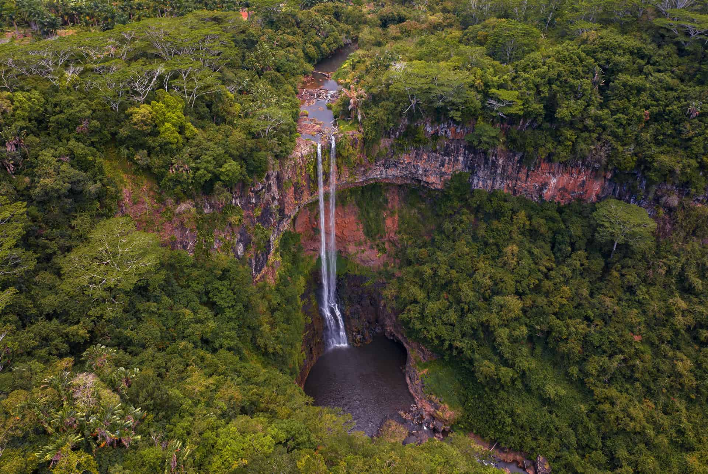
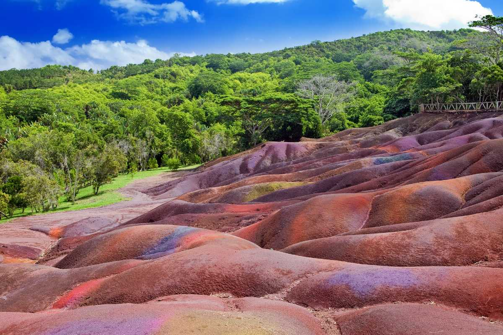
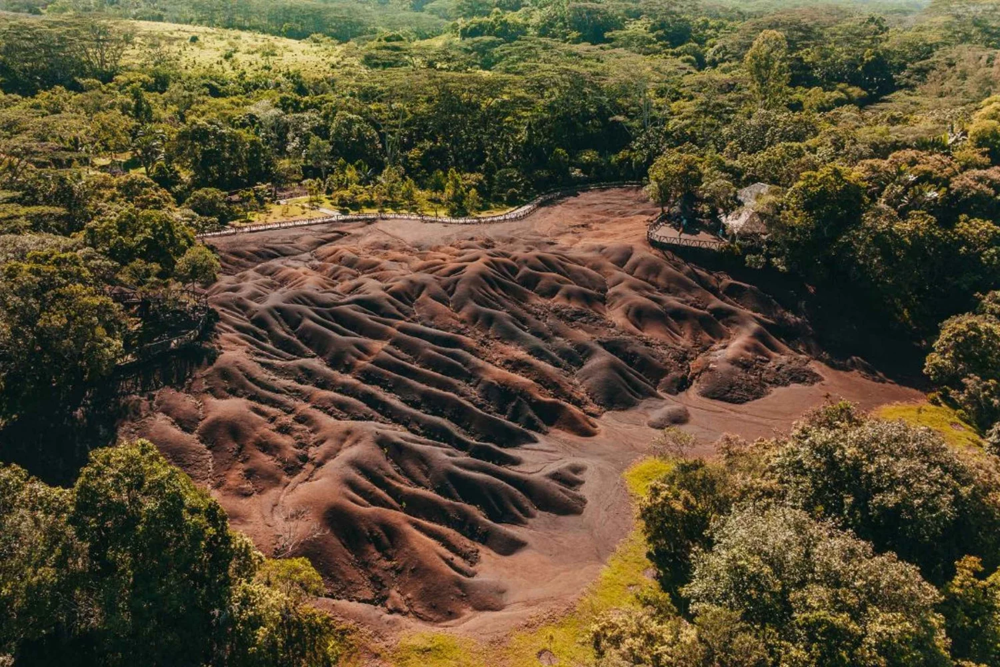
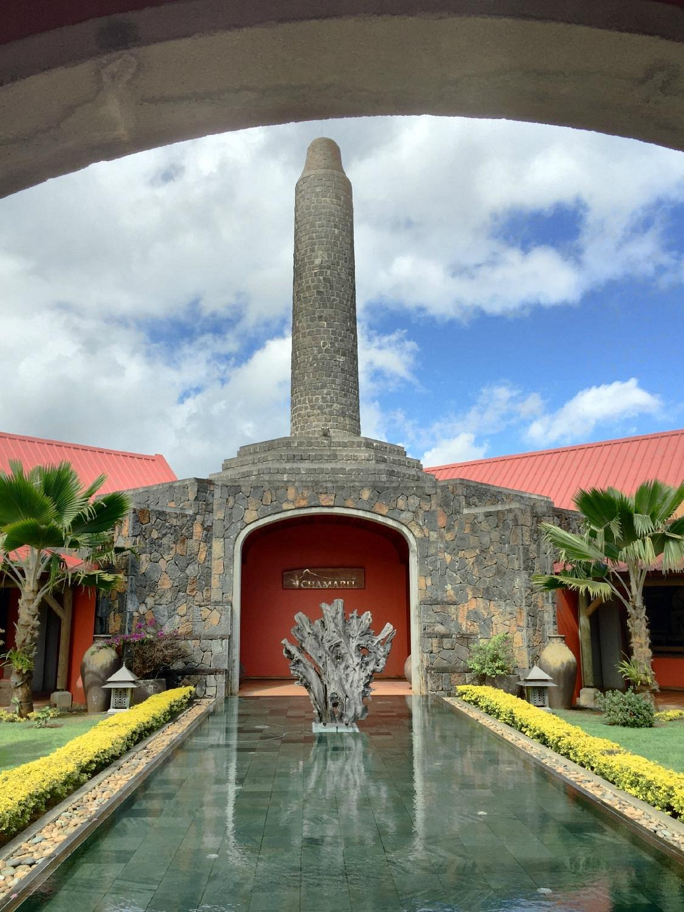
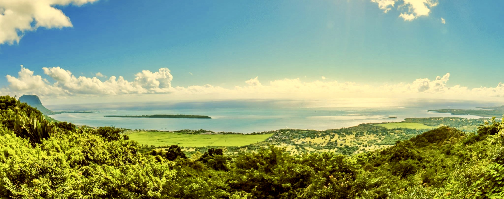

The Colored Earth & Natural Wonders of Mauritius
Chamarel is a picturesque village located in the Rivière Noire District of Mauritius, famous for its extraordinary natural phenomena. The most iconic attraction is the Seven Colored Earths, a geological formation featuring sand dunes of seven distinct colors (red, brown, violet, green, blue, purple, and yellow) that spontaneously settle in separate layers, creating a surreal, rainbow-like landscape. Nearby, the Chamarel Waterfall plunges 100 meters down a cliff face, making it the highest waterfall in Mauritius. The area is surrounded by lush tropical forests, vanilla and palm plantations, and offers breathtaking panoramic views of the southwestern coast.
Natural Wonders




